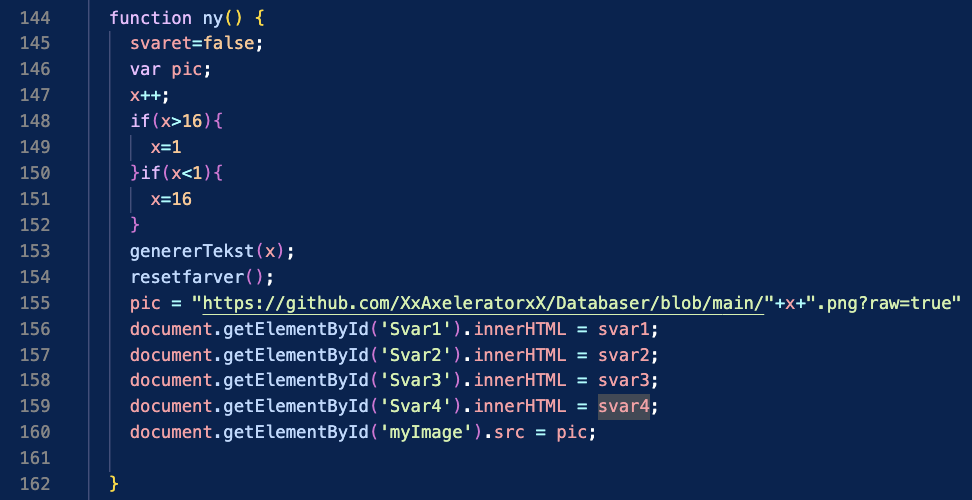

I dette forløb har vi lært om hvordan databaser fungerer, og hvad man kan bruge dem til.
Dette kunne f.eks. være en flashcard/quiz-hjemmeside. Derfor har vi i dette forløb udviklet en “Epic Logo Quiz”, hvor vi kombinerer en database med hjemmesideprogrammering.
Udviklet af: Jens Arvid, Bastian, Sylvester og Axel
Eller se tankerne og processerne bag Epic Logo Quiz herunder
Ideen bag vores produkt
Vores projekt tager udgangspunkt i en database fra en .csv-fil for at lave en interaktiv quiz om logoer. Vi har forsøgt at lave et brugervenligt design ved at have en simpel overskuelig
stil til websitet. Det er vores vurdering, at formålet med websitet er klart så snart man klikker ind på det, da fire valgmuligheder og et logo bliver præsenteret.
Vi har lavet titlen, knapperne og pilene i HTML, hvor vi herefter har brugt en database i en .csv-fil koblet med Javascript kode, for at tilføje interaktion og funktionalitet på websitet.
og f.eks. med store knapper, som bliver rød på forkert svar og grøn på rigtigt svar.
Hvad løser produktet?
At læse op til eksamen kan være både ekstremt demotiverende og mega kedeligt.
Det kan derfor ofte virke opkvikkende at vende blikket mod nye og kreative metoder såsom en sprød quiz.
Hvis du som eksempel skal op i det fiktive og mega udfordrende fag “Logo kendskab”, så har vi udviklet den helt rigtige quiz til dig.
Vi taler om en Episk logo quiz med et lækkert designet præsentationslag, et logiklag der bare giver mening og selvfølgelig en solid database på fod med selv de største spillere som Google.
Quizzen udfordrer dine kreative færdigheder og er designet til at blive sværere og sværere...
Normalisering af databaser
Fordelen og charmen ved at have en database, er at man kan gøre meget store mængder af information overskuelig.
Dette kan gøres ved at "normalisere" en database. En database er normaliseret, hvis den:
• Har en unik primærnøgle.• Ikke har nogle kolonnner, som er afhængig af andre kolonner end primærnøglen.• Kun har én datatype i hver kolonne.• Ikke lader dataen gentage sig selv, og dataen kun forekommer ét sted - dette kaldes redundans.• Har data som er relateret rent praktisk med hinanden.
Til højre ses en ikke-normaliseret og normaliseret udgave af en database. I den første tabel ejer Hans 2 biler, men primærnøglen "kundeID" er den samme for begge biler,
hvilket bryder kravet om redundans. Biltype relateres derfor med primærnøglen "kundeID" igennem en sekundærnøgle kaldet "bilID".
På denne måde er databasen normaliseret og overskueliggjort.
Modellering af produktet
Som del af udviklingen af vores program skulle vi lave en database.
Database skulle for os indeholde flere entiteter:
• Et Billed ID, som fortæller hvilket logo der skal vises.• Flere Svar ID, som er tilknyttet et Billed ID og fortæller hvilke svarmuligheder der skal vises. • En værdi for hvert enkelte Svar ID, sådan at programmet kan identificere det korrekte svar.
For bedre at kunne overskue entiteterne og deres relationer, valgte vi at opstillede et E/R diagram, som vi udviklede vores database ud fra.
Den database vi lavede til projektet, er også normaliseret. Vi ville gerne vise databasen, men desværre står alle svarene til quizzen deri, så i stedet kan den downloades herunder:
Tre lags arkitetur
Som krav til opgaven skulle vi som sagt kombinere hjemmesideprogrammering med databasen. Måden vi gjorde dette var ved brug af en tre lags arkitektur.
En tre lags arkitektur fungere ved man opdeler programmet i tre overskuelig lag med hvert sit formål.
Præsentationslag: Præsentationslaget er det lag der er tættest på brugeren og vi havde derfor meget fokus på interaktionsdesign ved udvikling af dette lag. For os skulle programmet være så brugervenligt og funktionelt som muligt.
Vi valgte derfor at gå med et enkelt og stilrent design, der gjorde formålet med programmet klart for brugeren.
Programmet skulle også have en form for tilfredsstillelse ved interaktion, som vi valgte at løse ved at tilføje lydeffekter når man klikkede på knapperne.
Logiklag: Logik laget er det lag der integrerer databasen med præsentationslaget ved udveksling af data mellem de to.
Til dette valgte vi at bruge Javascript.
Datalag: Datalag: Datalaget er databasen som er det tætteste lag på computeren og indeholder alt dataen.
For os skulle den indeholde de tre entiteter som vist tidligere.
I vores produkt: Vi fokuserede på præsentationslaget, da der er knapper som indeholder svarmuligheder og viser brugeren, om svaret er korrekt eller ej med farve (rød, grøn).
Derudover brugte vi også lydklip til yderligere at understøtte om dette var korrekt eller forkert, så brugeren ikke er i tvivl.
Derudover kan 2 pile ses i præsentationslaget, som skifter til næste spørsmål (også understøttet med lydeffekt).
Forklaring af koden
Som del af vores program skulle brugeren være i stand til at skifte mellem billederne af logoer og deres tilknyttede svarmuligheder. Til dette skulle vi bruge JavaScript og koden fungerer således:
Funktion genererTekst(x) er en funktion hvis formål er at starte et loop der gennemgår databasen indtil den finder et element med en “LogoID” attribut, der er lig med x. Den vil så sætte de forskellige attributter ind i de fire svar variabler og derefter stoppe loopet.
Funktion ny() er en funktion som fungerer således:
Som det første tilføjer den 1 til variabel x.
Herefter tjekker den om x er større end 16 eller mindre end 0, hvis ja, sætter den variabel x til enten 1 eller 16. Dette skaber et loop i quizzen.
Herefter kalder den for funktionen genererTekst.
Så får variablen "pic" en værdi, der er en URL til et billede vi har uploadet på Github. Værdien er afhængig af værdien for variable x.
Herefter sættes indholdet af HTML-elementet med id 'Svar1', 'Svar2', 'Svar3', og 'Svar4' til værdierne af variablerne 'svar1', 'svar2', 'svar3', og 'svar4' som alle indeholder attributter trukket fra databasen da funktionen genererTekst blev kaldt.
Til sidst sættes indholdet af HTML-elementet med id ‘myImage’ til værdien af variablen ‘pic’.
Funktionen for på denne måde indsat et nyt billede af et logo med tilknyttede svarmuligheder trukket fra databasen i præsentationslaget.

Flowchart
Som en anden del af vores program skulle brugerne også være i stand til at se om deres svar var korrekt.
Til dette brugte vi også JavaScript og kan beskrives med dette flotte flowchart nedenfor:
Konklusion
Alt i alt mener vi at vi har udviklet et rigtig godt produkt der opfylder opgavekravene fint. Selvfølgelig er plads til lidt forbedringer.
Vi kunne for eksempel godt have tænkt os at lave et pointsystem, så man kunne se hvor mange svar man fik rigtigt og forkert.
Desværre havde vi ikke nok tid, og måtte derfor bare nøjes med den idylliske tanke om et fedt pointsystem.